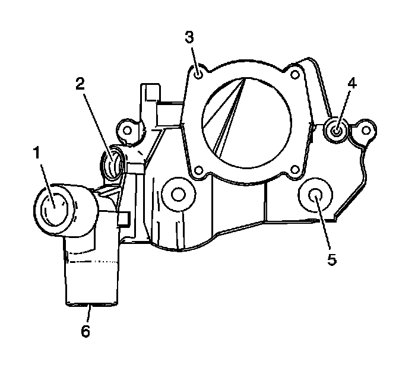
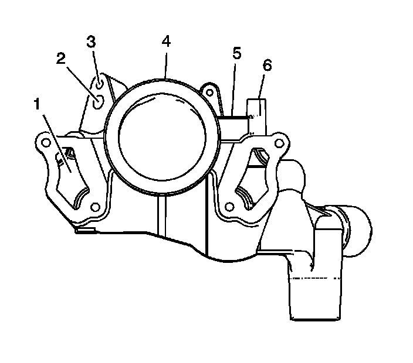

93. Water Outlet Housing Cleaning and Inspection
Water Outlet Housing Cleaning and Inspection
Cleaning Procedure
1. Clean the water outlet housing with solvent.
Caution: Refer to Safety Glasses Caution (Safety Glasses Warning) .
2. Dry the water outlet housing with compressed air.
Inspection Procedure

1. Inspect the front of the water outlet housing for the following:
* Damage or restrictions to the radiator hose connection (1)
* Damage to the threads for the heater hose fitting (2)
* Damage to the threads for the throttle body bolts (3)
* Damage to the threads for the engine coolant air bleed fitting (4)
* Damage to the water outlet housing-to-cylinder head mounting holes (5)
* Damage or restrictions to the bypass hose connection (6)

2. Inspect the rear of the water outlet housing for the following:
* Damage, blockage or excessive corrosion to the engine coolant passages (1)
* Damage or restrictions to the EVAP purge solenoid port (2)
* Damage to the threads for the EVAP purge solenoid bolt (3)
* Damage to the sealing surface for the intake manifold duct (4)
* Damage or restrictions to the MAP sensor port (5)
* Damage to the threads for the MAP sensor bolt (6)
3. Repair or replace the water outlet housing as necessary.